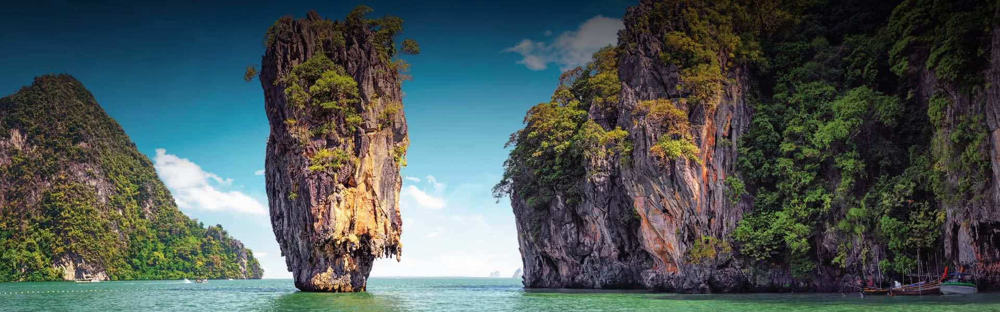

Pradeepika | 2min read | 12-10-2023

Phuket, an island province nestled in the Andaman Sea of Thailand, is a destination that needs no introduction. With its stunning beaches, vibrant culture, and a myriad of attractions, Phuket continues to captivate the hearts of travelers from around the world. Whether you're seeking relaxation, adventure, or a taste of Thai culture, Phuket has it all.
Beaches and Beyond
Phuket's beaches are legendary, and for good reason. Patong Beach, with its lively atmosphere and vibrant nightlife, is perfect for those looking for entertainment and water sports. If you prefer a quieter escape, Kata and Karon Beaches offer a more serene setting with crystal-clear waters and picturesque sunsets.
Beyond the beaches, you'll find a treasure trove of cultural experiences. Visit the iconic Big Buddha, a massive marble statue that overlooks the island and offers panoramic views. Explore the Old Phuket Town with its Sino-Portuguese architecture, colorful streets, and delicious street food stalls.
Island Adventures
Phuket is a gateway to numerous island adventures. Take a boat tour to Phi Phi Islands, known for their turquoise waters and breathtaking cliffs. Explore the James Bond Island, made famous by the film "The Man with the Golden Gun." Dive enthusiasts can explore the vibrant underwater world at the Similan Islands, known for their pristine coral reefs.
Culinary Delights
Thai cuisine is renowned worldwide, and Phuket offers some of the best. From street vendors selling pad Thai and mango sticky rice to upscale restaurants serving authentic Thai delicacies, your taste buds will be in for a treat. Don't forget to sample fresh seafood at the local markets and beachside restaurants.
Luxury and Relaxation
Phuket is also synonymous with luxury. Pamper yourself with a stay at one of the island's world-class resorts and spas. Enjoy a traditional Thai massage, indulge in a spa treatment, or simply relax by the pool while sipping on a tropical cocktail.
In conclusion, Phuket is a destination that has it all - natural beauty, cultural richness, adventure, and relaxation. Whether you're an adrenaline junkie or a laid-back traveler, Phuket's diverse offerings ensure a memorable experience that will keep you coming back for more. So, pack your bags and set out to discover the enchanting beauty of Phuket; you won't be disappointed.